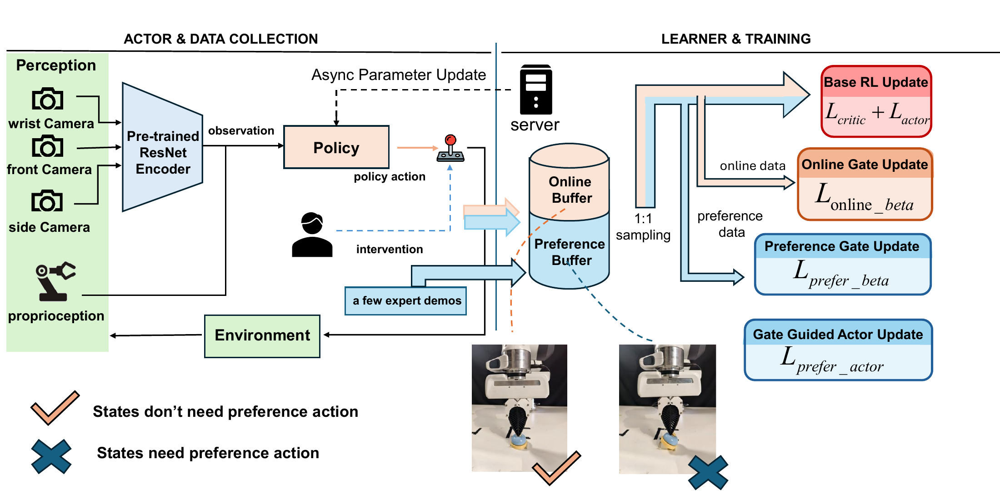

Accepted at IEEE Robotics and Automation Letters (RA-L)
OHP-RL: Online Human Preference as Guidance in Reinforcement Learning for Robot Manipulation
The Hong Kong University of Science and Technology (Guangzhou)
Abstract
While reinforcement learning (RL) enables robots to acquire skills autonomously, its real-world deployment is severely limited by inefficient and unsafe exploration. Human-in-the-loop interventions offer a practical solution, yet existing methods typically exploit these interventions as auxiliary training signals, without fully capturing the richer information they provide about when and how autonomy should be guided.
Human interventions often encode relative preferences over behavior under safety and task constraints, rather than prescribing exact actions to imitate. Motivated by this perspective, we propose Online Human Preference as Guidance in Reinforcement Learning (OHP-RL), a framework that leverages human interventions as preference information to guide policy learning. OHP-RL introduces a state-dependent preference gate that adaptively regulates when and to what extent human interventions should shape policy learning. This design enables the agent to benefit from intermittent and imperfect human feedback while preserving autonomous exploration and stable policy optimization.
We evaluate OHP-RL on three challenging real-world contact-rich manipulation tasks on a Franka robot. Across all tasks, OHP-RL consistently achieves strong success rates, faster convergence, and substantially lower human intervention effort than prior approaches. Moreover, the learned policies exhibit more stable and human-aligned behavior throughout training.
Method

Experiments
Experimental setup
Training
Inference
BibTeX
@misc{mo2026ohprl,
title = {{OHP-RL}: Online Human Preference as Guidance in
Reinforcement Learning for Robot Manipulation},
author = {Mo, Yunyang and Li, Jian and Wu, Qiwei and
Kang, Yihang and Xu, Renjing},
year = {2026},
eprint = {2605.15971},
archivePrefix = {arXiv},
primaryClass = {cs.RO},
url = {https://arxiv.org/abs/2605.15971},
note = {Accepted at IEEE Robotics and Automation Letters (RA-L)}
}